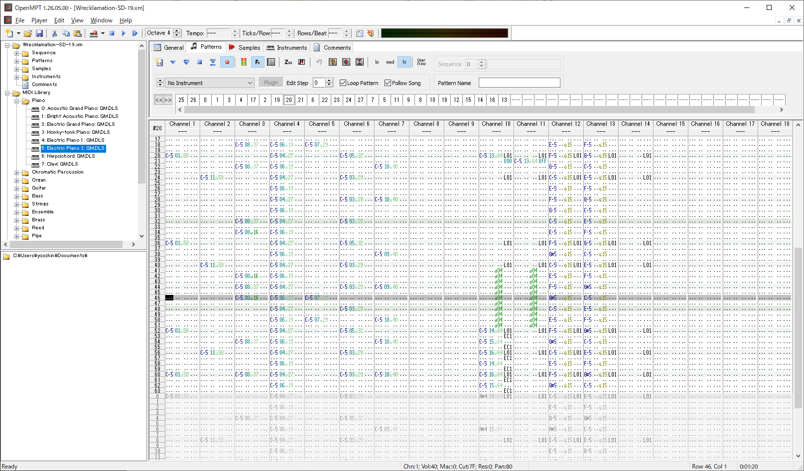
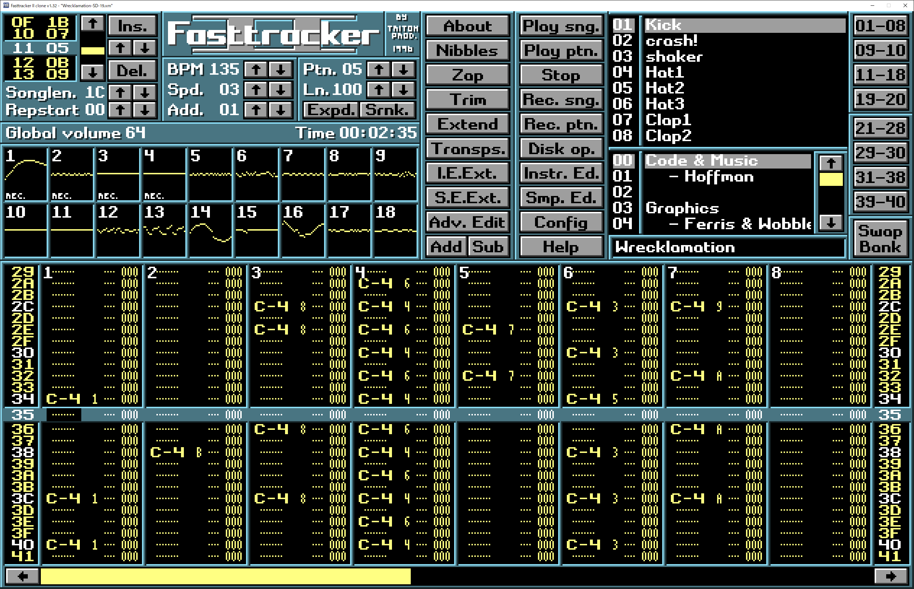
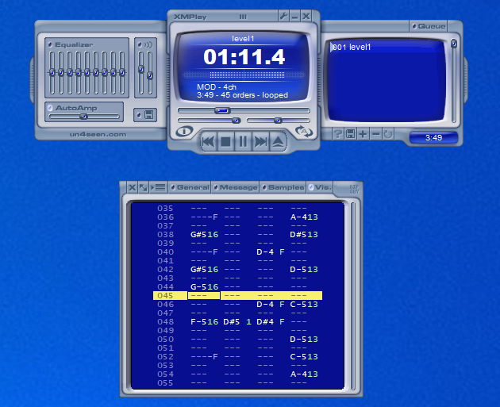

[戻る]
ミュージックフォーマット MOD について
MOD は、海外のパソコン Amiga 上で生れ、発展したミュージックフォーマットです。
このではその概要についてまとめます。
概要
MOD とは
MOD の音色データはサンプリング音のみが利用可能
MOD データは楽曲データの中身がまる見せなフォーマットである
MOD の長所・短所
MOD の長所
再生結果が再生機材に依存しない
データサイズが比較的小さい
枯れたフォーマットである
MOD の短所
再生結果が再生ソフトによって異なる
フォーマットの完全な仕様書は存在しない
MOD がサポートする機能
MOD形式 / S3M形式 / XM形式 / IT形式 で差がありますが、
MOD がサポートする機能は概ね以下の様なものです。
多チャンネル同時発声
ポルタメント
ボリュームスライド
パンスライド
サンプリングデータのループ再生
サンプリングデータの各種エンベロープ指定
音量の変化を示すボリュームエンベロープ
パンの変化を示すパンエンベロープ
音程の変化を示すピッチエンベロープ
音階ごとのサンプリングデータ差し替え
MOD データの構成要素
MOD データは以下に挙げる要素で構成されています。
Note
Row
Pattern
Sequence
Sample
Instrument
サンプリングデータ番号（音階毎に設定可能）
各種エンベロープの形状
自動ビブラートの形状
要約すると、
各チャンネルの音符（=Note）と音色（=Sample & Instrument）の情報を横に記述した行（=Row）を、
さらに縦に並べて１小節（=Pattern）分のデータを作ったのち、
小節の並び順（=Sequence）を定義することで、全体の楽曲が定義されます。
MOD データの作成
MOD データ作成ツールは、一般的に Tracker と呼ばれています。
OpenMPT
こちら
からダウンロードできます。

FastTracker II
こちら
からダウンロードできます。

MOD データの再生
おすすめ再生ソフト
XMPlay
がオススメです。
XMPlay はもともと XM 形式の再生に特化して作成されたもので、
XM 形式をはじめ MOD データの再現精度が高いとされています。
2020 年現在、デモパーティで使用される MOD 再生環境としてデファクトスタンダードとなっています。

MOD とデモシーンの関係
デモシーンについては、
こちら
を参照してください。
VIDEO
よっしん
[戻る]